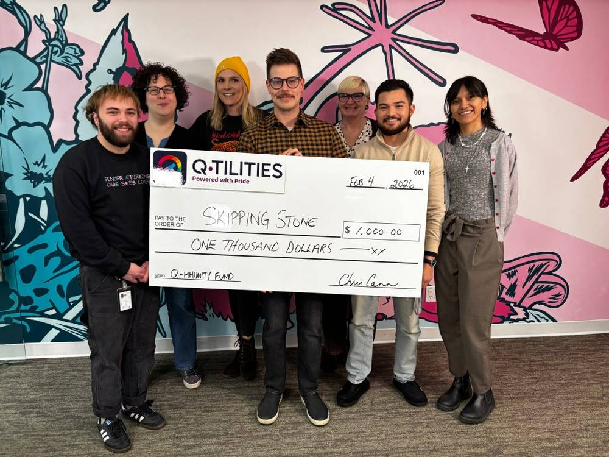

캐나다 캘거리 전기·가스 판매사, 이익 전액을 지역 성소수자 단체에 돌린다

창업자는 급여 없이 5년 안에 10만 달러 이상 환원 목표, 2월에는 1,000달러 기금 전달
캐나다 앨버타주 캘거리의 전기·천연가스 판매회사 Q-TILITIES가 이익의 100%를 앨버타 성소수자 단체에 돌려주는 사회적기업으로 운영되고 있다. 회사는 2025년 8월 영업을 시작했다고 누리집에 밝혔다. 창업자 크리스 캔 대표는 급여를 받지 않으며, 면허·마케팅·회계 같은 운영비만 쓰고 나머지를 지역사회에 보낸다고 설명했다.
이 회사가 운영하는 'Q-mmunity Fund'는 2026년 2월 4일 캘거리의 비영리단체 스키핑 스톤(Skipping Stone)에 1,000달러 수표를 전달했다. 회사의 목표는 앞으로 5년 안에 10만 달러 이상을 내놓는 것이다. 캔 대표는 "이익 100%라고 할 때 그것은 이익 전부가 공동체로 돌아간다는 뜻"이라고 말했다. 앨버타 성소수자 상공회의소는 소개 협력기관으로 회사에 고객을 연결한다.
지역사회 활동가 Victoria Bucholtz는 이 시도를 공동체를 돕는 의미 있는 걸음으로 평가하면서도, 전기·가스 같은 공공서비스는 공공이 소유해야 한다는 견해를 밝혔다. 회사 누리집에 따르면 고정요금제 'Pride Rate'는 1킬로와트시(kWh)당 7.10센트이며, 2029년 4월 30일까지 요금이 유지된다.
출처: Calgary Journal 2026-11-12(누리집 표시 수정일 2026-11-17) Talha Abosafi 원문 보기
출처: Q-TILITIES 2026-11-18 열람 회사 누리집(영업 시작 시기·이익 100% 문구·고정요금 7.10센트) 원문 보기
カナダ・カルガリーの電気・ガス小売会社、利益の全額を地域の性的少数者団体へ
創業者は無給で5年以内に10万ドル以上の還元を目標、2月には1,000ドルの基金を贈呈
カナダ・アルバータ州カルガリーの電気・天然ガス小売会社Q-TILITIESが、利益の100％をアルバータ州の性的少数者団体に還元する社会的企業として運営されている。同社は2025年8月に営業を始めたと自社サイトで明らかにしている。創業者のクリス・キャン代表は給与を受け取らず、免許・マーケティング・会計などの運営費だけを使い、残りを地域社会に回すと説明した。
同社が運営する「Q-mmunity Fund」は2026年2月4日、カルガリーの非営利団体スキッピング・ストーン（Skipping Stone）に1,000ドルの小切手を贈った。同社の目標は、今後5年以内に10万ドル以上を拠出することだ。キャン代表は「利益100％と言うとき、それは利益のすべてがコミュニティーに戻るという意味だ」と語った。アルバータ州の性的少数者商工会議所は、紹介パートナーとして同社に顧客をつないでいる。
地域活動家のVictoria Bucholtz氏は、この取り組みをコミュニティーを支える意義ある一歩と評価しつつ、電気・ガスのような公共サービスは公営であるべきだとの見解を示した。同社のサイトによると、固定料金プラン「Pride Rate」は1キロワット時（kWh）当たり7.10セントで、2029年4月30日まで料金が維持される。
出典: Calgary Journal 2026-11-12(サイト表示の更新日 2026-11-17) Talha Abosafi 原文を読む
出典: Q-TILITIES 2026-11-18 閲覧 同社サイト（営業開始時期・利益100％の文言・固定料金7.10セント） 原文を読む
加拿大卡尔加里电力燃气零售商将全部利润用于当地性少数群体组织
创始人不领薪水，目标五年内回馈10万美元以上，2月已捐出1,000美元基金
加拿大艾伯塔省卡尔加里的电力和天然气零售公司Q-TILITIES，以社会企业的方式运营，把利润的100%回馈给艾伯塔省的性少数群体组织。公司在官网上表示，2025年8月开始营业。创始人克里斯·坎恩不领薪水，只支出执照、营销、会计等运营费用，其余都送往当地社区。
该公司运营的“Q-mmunity Fund”于2026年2月4日向卡尔加里的非营利组织Skipping Stone捐出一张1,000美元的支票。公司的目标是未来五年内拿出10万美元以上。坎恩表示：“我说利润的100%，意思就是全部利润都回到社区。”艾伯塔省性少数群体商会作为推荐合作机构，为公司介绍客户。
社区活动人士Victoria Bucholtz认为这一尝试是支持社区的有意义的一步，同时表示电力、燃气等公共服务应当归公共所有。据公司官网，固定电价套餐“Pride Rate”为每千瓦时（kWh）7.10美分，价格保持到2029年4月30日。
来源: Calgary Journal 2026-11-12（网站显示更新日 2026-11-17） Talha Abosafi 查看原文
来源: Q-TILITIES 2026-11-18 查阅 公司网站（开业时间、利润100%表述、固定电价7.10美分） 查看原文
Calgary power and gas retailer puts all of its profits toward local LGBTQ+ groups
Founder takes no salary and aims to give back $100,000 or more within five years; a $1,000 fund cheque went out in February
Q-TILITIES, an electricity and natural gas retailer in Calgary, Alberta, runs as a social enterprise that returns 100% of its profits to 2SLGBTQIA+ groups in Alberta. The company says on its website that it launched in August 2025. Founder Chris Cann takes no salary and explained that only operating costs such as licensing, marketing and accounting are spent, with the rest going to the local community.
The company's Q-mmunity Fund presented a $1,000 cheque to Skipping Stone, a Calgary non-profit, on February 4, 2026. Its goal is to contribute $100,000 or more over the next five years. "When I say 100 per cent of profits, I mean 100 per cent of profits are going back into the community," Cann said. The Alberta 2SLGBTQI+ Chamber of Commerce acts as a referral partner and connects customers to the company.
Community advocate Victoria Bucholtz called the effort a meaningful step in supporting the community, while saying that utilities such as power and gas should be publicly owned. According to the company's website, its fixed-rate plan, the Pride Rate, is 7.10 cents per kilowatt-hour (kWh) and is guaranteed until April 30, 2029.
Source: Calgary Journal 2026-11-12 (site shows update date 2026-11-17) Talha Abosafi Read the original
Source: Q-TILITIES viewed 2026-11-18 Company website (launch date, 100% profit statement, fixed rate of 7.10 cents) Read the original